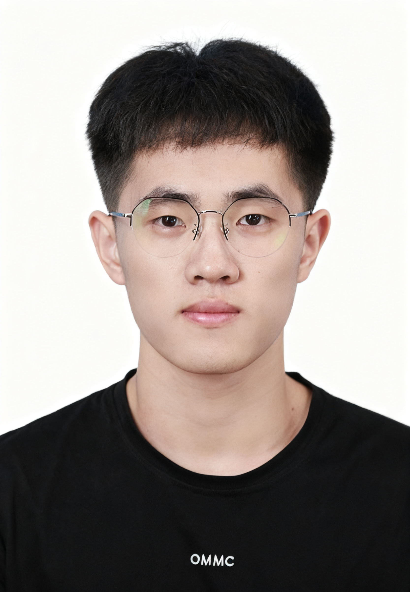
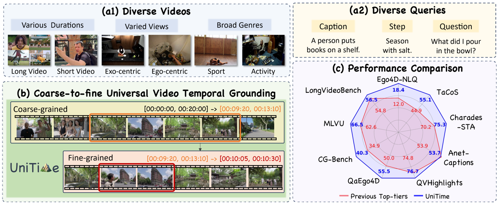

Zeqian Li
About Me
I am a second-year PhD candidate at Shanghai Jiao Tong University (SJTU), advised by Prof. Weidi Xie. I received my Bachelor degree in Information Engineering, also from Shanghai Jiao Tong University.
My research focuses on long video understanding and multi-modal representation learning.
Publications
-

NeurIPSAdvances in Neural Information Processing Systems (NeurIPS), 2025.Towards universal video grounding with superior accuracy, generalizability, and robustness. -
 ICCV
IEEE/CVF International Conference on Computer Vision (ICCV), 2025.Learn streaming video representations of various granularities through multitask training, including retrieval, action recognition, temporal grounding, and segmentation.
ICCV
IEEE/CVF International Conference on Computer Vision (ICCV), 2025.Learn streaming video representations of various granularities through multitask training, including retrieval, action recognition, temporal grounding, and segmentation. -
 ECCV
European Conference on Computer Vision (ECCV), 2024.An automatic, scalable pipeline for denoising the large-scale instructional dataset and construct a high-quality video-text dataset with multiple descriptive steps supervision.
ECCV
European Conference on Computer Vision (ECCV), 2024.An automatic, scalable pipeline for denoising the large-scale instructional dataset and construct a high-quality video-text dataset with multiple descriptive steps supervision.
Powered by Jekyll and Minimal Light theme.